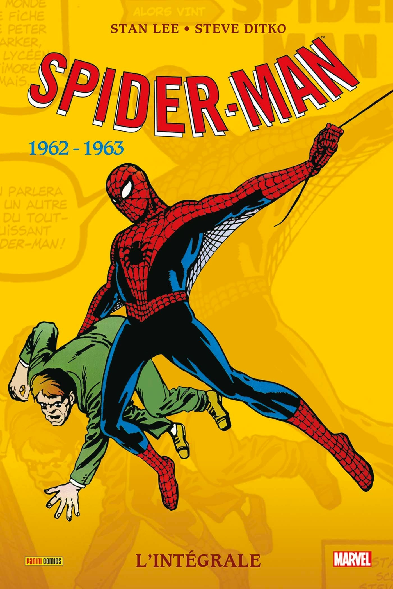
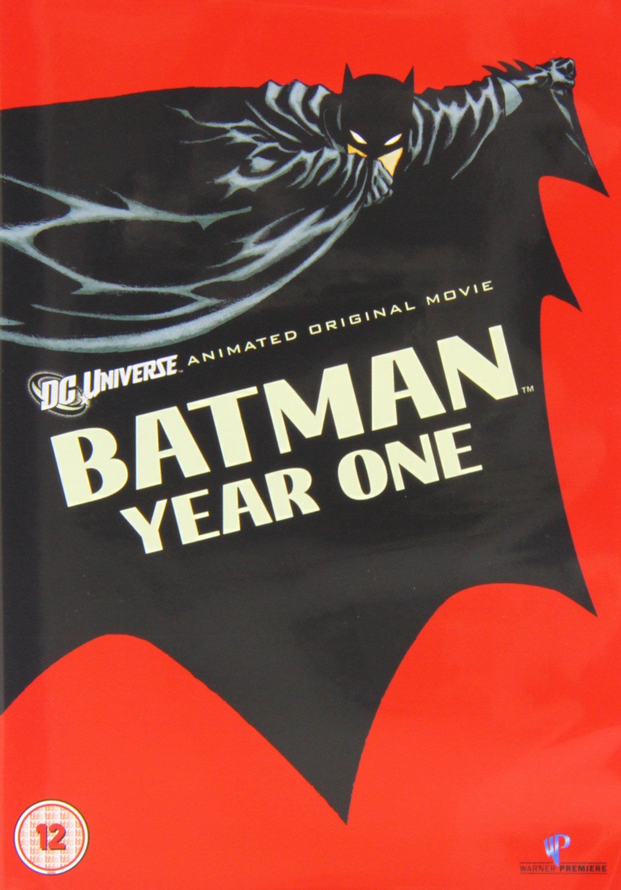
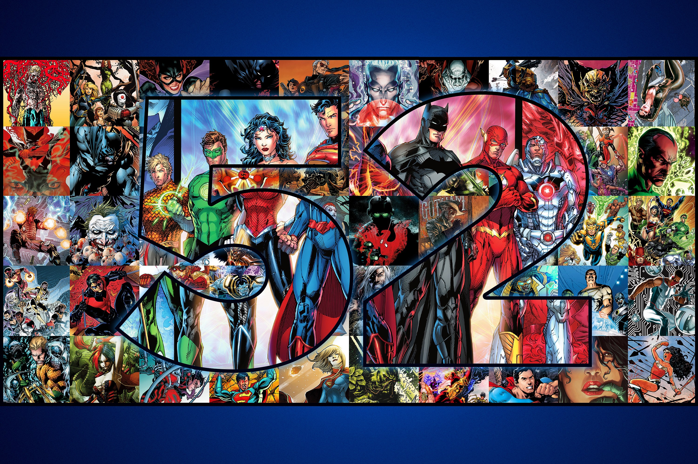
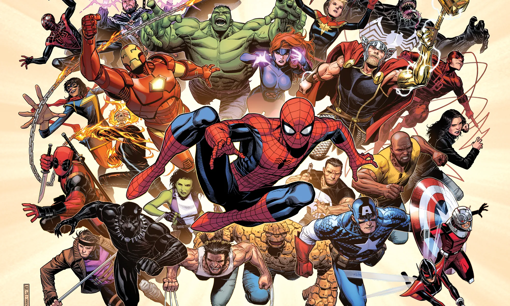

How to Start Reading Comics
Panel Reading Order
Comics are generally read from left to right and top to bottom. This rule applies to both the panels on the page and the dialogue balloons within a single panel. In Manga, the order is reversed (right to left).
Glossary of Terms
Single Issue
A single comic book, usually around 20-30 pages long, released monthly.
Trade Paperback (TPB)
A collection of several single issues compiled into one book, usually containing a full story arc.
Run
A series of consecutive issues created by the same writer or creative team.
Crossover
A major event where characters from different series meet in one story.
Starting Points Timeline
1962: Amazing Fantasy #15 (Marvel)
The classic first appearance of Spider-Man. Great for historical context.

1987: Batman: Year One (DC)
The definitive origin story of modern Batman. Perfect starting point for DC.

2011: The New 52 (DC)
A complete reboot of the DC Universe. All series restarted from issue #1.

2018: Fresh Start (Marvel)
Marvel's recent initiative to provide easy jumping-on points for new readers without erasing history.

Universe Comparison
| Feature | Marvel | DC |
|---|---|---|
| Atmosphere | Grounded, flawed heroes with everyday human problems. | Mythic, epic scale with heroes depicted as modern gods. |
| Fictional Cities | Usually real cities (e.g., New York, San Francisco). | Fictional cities (e.g., Gotham, Metropolis, Central City). |
| Core Teams | Avengers, X-Men, Fantastic Four. | Justice League, Teen Titans, Justice Society. |